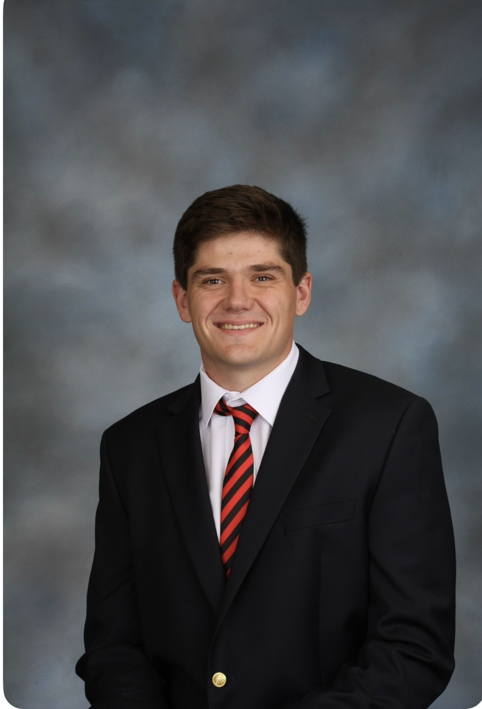

Owen Prysock

520 Richards Rd, Kennett Square, PA 19348
(610) 840-3090
owenprysock54@gmail.com
Software engineering student focused on machine learning and computer vision
Education
- University of Georgia
- GPA: 3.94
- Bachelor's of Science in Computer Science
- December 2026
Honors and Awards
- Presidential Scholar
- 2023-present
- IFC Scholarship Recipient
- 2024-present
Skills
Projects
Coupling Installation Analyzer

- Designed an image detection and segmentation model that identified installation flaws as small as .01 inches
- Refined the model to run live at 15 frames per second on mobile devices for field deployment
FundMatch

- Developed robust backend Python code to match the user to an investment fund based on personal information
- Implemented a high-quality matching algorithm to find the proper fund from 200+ investment options for each user
TradeIt

- Implemented a complex Google Firebase database structure for managing 100+ posts and organizational categories
- Devised a real-time marketplace for university students to buy and sell items directly with other students